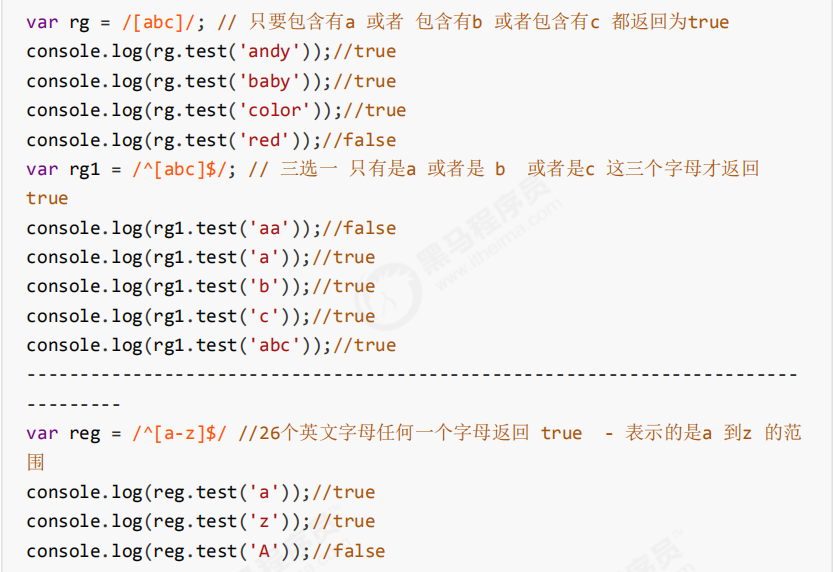

3.1 静态成员和实例成员
实例成员 ：实例成员就是构造函数内部通过this添加的成员，实例成员只能通过实例化的对象来访问
以下代码里的 uname age sing就是实例成员
function Star(uname, age) {
this.uname = uname;
this.age = age;
this.sing = function() {
console.log('我会唱歌');
}
}
var ldh = new Star('刘德华', 18);
console.log(ldh.uname); //实例成员只能通过实例化的对象来访问
静态成员 ：在构造函数本身上添加的成员 静态成员只能通过构造函数来访问 在ES5中只要被static修饰的属性和方法都是静态成员
下列代码中 sex 就是静态成员
function Star(uname, age) {
this.uname = uname;
this.age = age;
this.sing = function() {
console.log('我会唱歌');
}
}
Star.sex = '男';
var ldh = new Star('刘德华', 18);
console.log(Star.sex); //静态成员只能通过构造函数来访问3.2构造函数的问题
存在浪费内存的问题
function Star(uname , age) {
this.uname = uname;
this.age = age;
this.sing = function(){
console.log('我会唱歌')
}
}
var ldh = new Star("刘德华"，18)；
var shuji= new Star("书记"，22)；
ldh.sing();
shuji.sing();以上代码在调用sing方法时都会在内存开辟一个新的空间，如果有多个对象来调用sing方法就会占用过多内存，所以我们就用到了构造函数的原型 prototype。
3.3 构造函数原型prototype
构造函数通过原型分配的函数是所有对象所共享的。
JavaScript 规定，每一个构造函数都有一个prototype 属性，指向另一个对象。注意这个prototype就是一个对象，这个对象的所有属性和方法，都会被构造函数所拥有。
我们可以把那些不变的方法，直接定义在 prototype 对象上，这样所有对象的实例就可以共享这些方法。
构造函数.prototype就可以获取原型对象
function Star(uname, age) {
this.uname = uname;
this.age = age;
}
Star.prototype.sing = function() {
console.log('我会唱歌');
}
var ldh = new Star('刘德华', 18);
var zxy = new Star('张学友', 19);
ldh.sing(); //我会唱歌
zxy.sing(); //我会唱歌
3.4 对象原型
实例化对象都会有一个__proto__属性指向构造函数的原型对象，而我们的实例化对象可以使用对象原型的属性和方法就是因为有__proto__属性的存在
实例化对象.__proto__ === 构造函数.prototype
它们的三角关系如下图：
__proto__对象原型的意义就在于为对象的查找机制提供一个方向，或者说一条路线，但是它是一个非标准属性，因此实际开发中，不可以使用这个属性，它只是内部指向原型对象prototype
3.5 constructor构造函数
对象原型（ __proto__）和构造函数（prototype）原型对象里面都有一个属性constructor 属性
constructor 我们称为构造函数，因为它指回构造函数本身。
constructor 主要用于记录该对象引用于哪个构造函数，它可以让原型对象重新指向原来的构造函数。
3.6 原型链和查找机制
每一个实例对象又有一个proto属性，指向的构造函数的原型对象，构造函数的原型对象也是一个对象，也有proto属性，这样一层一层往上找就形成了原型链。
查找机制：
当访问一个对象的属性（包括方法）时，首先查找这个对象自身有没有该属性，如果自身有，就有自身的属性和方法。
如果没有就查找它的原型（也就是 __proto__指向的 prototype 原型对象）。
如果还没有就查找原型对象的原型（Object的原型对象）。依此类推一直找到 Object 为止（null）。
如果找到尽头（null)都没找到，是属性则返回undefined，是方法则报错
3.7 原型对象中this的指向
构造函数中的this和原型对象的this,都指向我们new出来的实例对象
3.8 通过原型对象为数组扩展内置方法
var arr = [3，6，9，8，5]
arr.prototype.sum = function() {
var sum = 0;
for (var i = 0; i < this.length; i++) {
sum += this[i];
}
return sum;
}; //此时数组对象中已经存在sum()方法了 可以用于数组.sum()进行数据的求和
4.1 call()
call()可以调用函数 可以修改this的指向，使用call()的时候，()里的第一个参数是修改的this指向，参数2 参数3 使用逗号隔开
function fn(x, y) {
console.log(this);
console.log(x + y);
}
var o = {
name: 'andy'
};
fn.call(o, 1, 2); //调用了函数此时的this指向了对象o, 4.2 构造函数继承属性
// 1. 父构造函数
function Father(uname, age) {
// this 指向父构造函数的对象实例
this.uname = uname;
this.age = age;
}
// 2 .子构造函数
function Son(uname, age, score) {
// this 指向子构造函数的对象实例
//3.使用call方式实现子继承父的属性
Father.call(this, uname, age);
this.score = score;
}
var son = new Son('刘德华', 18, 100);
console.log(son);
4.3 借用原型对象继承方法
// 1. 父构造函数
function Father(uname, age) {
// this 指向父构造函数的对象实例
this.uname = uname;
this.age = age;
}
Father.prototype.money = function() {
console.log(100000);
};// Son.prototype = Father.prototype; 这样直接赋值会有问题,如果修改了子原型对 象,父原型对象也会跟着一起变化
Son.prototype = new Father();
// 如果利用对象的形式修改了原型对象,别忘了利用constructor 指回原来的构造函数
Son.prototype.constructor = Son;
// 这个是子构造函数专门的方法
Son.prototype.exam = function() {
console.log('孩子要考试');
}
var son = new Son('刘德华', 18, 100);
console.log(son);
5.1 forEach()遍历数组 没有返回值
array.forEach(function(value , index , array){....})
value是每个数组元素
index是每个元素索引值
array是当前数组
5.2 filter()筛选数组 其实也会遍历数组
array.filter(function(value , index , array){
return 条件表达式
})
返回的是一个新数组 括号跟的参数都是一样的
5.3 some() 查找数组中是否有满足条件的元素 其实也会遍历数组
array.some(function(value , index , array){
return 条件表达式
})
返回值是布尔值，只要查找到第一个满足条件的元素就会终止循环 效率高
5.4 trim方法去除字符串两端的空格
字符串的特性 不可变性
var str = ' hello ' ；
console.log(str.trim()） //hello 去除两端空格
var str1 = ' he l l o ' ;
console.log(str1.trim()） //he l l o 去除两端空格5.5 获取对象的属性名
Object.keys(对象) 获取到当前对象中的属性名 ，返回值是一个数组
var obj = {
id: 1,
pname: '小米',
price: 1999,
num: 2000
};
var result = Object.keys(obj);
console.log(result) //返回的新数组[id，pname,price,num]5.6 Object.defineProperty设置或修改对象中的属性
Object.defineProperty(对象，修改或新增的属性名，{
value:修改或新增的属性的值,
writable:true/false, //如果值为false 不允许修改这个属性值
enumerable: false, //enumerable 如果值为false 则不允许遍历
configurable: false //configurable 如果为false 则不允许删除这个属性 属性是否可以被删除或是否可以再次修改特性
})
6.1 函数的定义方式
(1) function关键字（命名函数）
function fn(){......}
(2) 函数表达式(匿名函数)
var fn = function(){......}
(3) 利用new function('参数1','参数2','函数体')
var f = new Function('a','b','console.log(a +b)'); //参数都必须是字符串格式
f( 3, 2); //输出结果是5
6.2 函数的调用方式
1 // 1.普通函数
2 function fn(){
3 console.log('hello world')
4 }
5 fn();
6
7 // 2.对象的方法
8 var o = {
9 sayHi : function(){
10 console.log('hello world')
11 }
12 }
13 o.sayHi();
14
15 // 3.构造函数
16 function Star(){};
17 new Star();
18
19
20 // 4.绑定函数事件
21 btn.onclick = function(){} // 点击了按钮就可以调用这个函数
22
23 // 5.定时器函数
24 setInterval(function(){},1000); // 这个函数定时器自动一秒钟调用一次
25
26 //6.立即执行函数（自调用函数）
27 (function(){
28 console.log('hello world')
29 })();
7.1 函数内部的this指向
一般情况下，this指向函数的调用者
7.2 改变函数内部this的指向
1.call()方法
可以直接调用函数，也可以改变this的指向
应用：经常做继承
2.apply()方法
可以直接调用函数，也可以改变this的指向
应用：跟数组有关
// 利用apply借助数学内置对象求最大值等
var arr = [1,56,55,4,33];
var max = Math.max.apply(Math,arr);
console.log(max) // 输出结果应该是563. bind()方法
不会调用函数，但是可以改边this的指向，返回的是一个新函数
应用：不调用函数，但是还想改变this指向
4. call、apply、bind三者区别
call和apply都是直接调用函数，可以改变this的指向
call后面跟的参数是列表形式，apply跟的是数组形式
bind不会直接调用函数，也可以改变ths的指向
ES5 的严格模式是采用具有限制性 JavaScript变体的一种方式，即在严格的条件下运行 JS 代码。
8.1 为脚本开启严格模式
(function (){
//在当前的这个自调用函数中有开启严格模式，当前函数之外还是普通模式
"use strict";
var num = 10;
function fn() {
}
})();
//或者
<script>
"use strict";
//当前script标签开启了严格模式
</script>
<script>
//当前script标签未开启严格模式
</script> 8.2 为函数开启严格模式
要给某个函数开启严格模式，需要把“use strict”; (或 'use strict'; ) 声明放在函数体所有语句之前。
function fn(){
"use strict";
return "123";
}
//当前fn函数开启了严格模式8.3 严格模式中的变化
'use strict';
num = 10 ;
console.log(num)//严格模式后使用未声明的变量
‐‐‐ ‐‐‐‐‐‐‐ ‐‐‐‐‐‐‐‐‐‐‐‐‐‐‐‐‐‐‐‐‐‐‐‐‐‐‐‐
var num2 = 1;
delete num2;//严格模式不允许删除变量
‐‐‐‐‐‐‐‐‐‐‐‐‐‐‐‐‐‐‐‐‐‐‐‐‐‐‐‐‐‐‐‐‐‐‐‐‐‐‐‐‐‐‐‐‐‐‐‐‐‐‐‐‐‐‐‐‐‐‐‐‐‐‐‐‐‐‐‐‐‐‐‐ ‐‐‐‐‐‐‐
function fn() {
console.log(this); // 严格模式下全局作用域中函数中的 this 是 undefined
}
fn();
‐‐‐‐‐‐‐‐‐‐‐‐‐‐‐‐‐‐‐‐‐‐‐‐‐‐‐‐‐‐‐‐‐‐‐‐‐‐‐‐‐‐‐‐‐‐‐‐‐‐‐‐‐‐‐‐‐‐‐‐‐‐‐‐‐‐‐‐‐‐‐‐‐ ‐‐‐‐‐‐‐‐
function Star() {
this.sex = '男';
}
// Star();严格模式下,如果 构造函数不加new调用, this 指向的是undefined 如果给 他赋值则 会报错.
var ldh = new Star();
console.log(ldh.sex);
‐‐‐‐‐‐‐‐‐‐‐‐‐‐‐‐‐‐‐‐‐‐‐‐‐‐‐‐‐‐‐‐‐‐‐‐‐‐‐‐‐‐‐‐‐‐‐‐‐‐‐‐‐‐‐‐‐‐‐‐‐‐‐‐‐‐‐‐‐‐‐‐‐ ‐‐‐‐‐‐‐‐‐
setTimeout(function() {
console.log(this); //严格模式下，定时器 this 还是指向 window
}, 2000);
高阶函数是对其他函数进行操作的函数，可以接收函数作为参数或者将函数作为返回值输出。
函数也是一种数据类型，同样可以作为参数，传递给另外一个参数使用。最典型的就是作为回调函数。同理函数也可以作为返回值传递回来
闭包是指有权访问另一个函数作用域中变量的函数。简单理解就是一个作用域可以访问另外一个函数内部的局部变量。
作用： 延伸变量的作用范围，增长了变量的生命周期。
弊端： 造成内存泄漏。(内存泄漏，就是本该销毁的数据没有销毁，造成内存浪费)
闭包里的经典面试题：
1. 遍历注册li的点击事件，利用闭包的实行，点击每一个li输出对应的索引
for (var i = 0; i < lis.length; i++) {
// 利用for循环创建了4个立即执行函数
// 立即执行函数也成为小闭包因为立即执行函数里面的任何一个函数都可以使用它的i这个变量
(function(i) {
lis[i].onclick = function() {
console.log(i);
}
})(i);
}2. 遍历 1 ~ 5 5个数值，利用闭包，在setTimeout里面输入 1 ~ 5
for (var i = 0; i < 5; i++) {
(function(i) {
setTimeout(function() {
console.log(lis[i].innerHTML);
}, 3000)
})(i);
}
如果一个函数在内部可以调用其本身，那么这个函数就是递归函数。
简单理解:函数内部自己调用自己, 这个函数就是递归函数
递归函数的作用和循环效果一样，很容易发生‘栈溢出’错误(stack overflow)，所以必须要加退出条件return。
1. 利用递归求1~n的阶乘
function fn(n){
if (n == 1) {
return 1;
}
return n * fn(n -1)
}
console.log(fn(3))
2. 利用递归求斐波那契数列(斐波那契数列就是前两个数的和等于第三个数字，也叫兔子数)
// 利用递归函数求斐波那契数列(兔子序列) 1、1、2、3、5、8、13、21...
// 用户输入一个数字 n 就可以求出 这个数字对应的兔子序列值
// 我们只需要知道用户输入的n 的前面两项(n‐1 n‐2)就可以计算出n 对应的序列值
function fb(n){
if ( n== 2 || n== 1) {
return 1;
}
return fb( n -1) + fb (n-2);
}
console.log(fb(3))
12.1 什么是正则表达式？
正则表达式(Regular Expression)是用于匹配字符串中字符组合的模式。在JavaScript中，正则表达式也是对象
12.2 作用
1.匹配 2. 替换 3.提取
1. 正则表达式的创建
方式一 ：通过调用RegExp对象的构造函数创建
var reg = new RegExp(/123/);
console.log(reg); // 输出结果 /123/
方式二 ： 利用字面量创建
var rg = /123/;
2. 测试正则表达式
test()正则对象方法，用于检测字符串是否符合规则，该方法返回值是布尔类型，true或false，括号里的参数是字符串
var rg = /123/;
console.log(rg.test(123)); // 返回值是true
console.log(rg.test('abc')); // 返回值是false
3. 正则表达式中的特殊字符
3.1边界符（正则表达式中的边界符（位置符）用来提示字符所处的位置）
如果 ^和 $ 在一起，表示必须是精确匹配
3.2 字符类
[ ]方括号，表示有一系列字符可供选择，只要匹配到其中一个就可以了

3.3 量词符
量词符用来设定某个模式出现的次数，都是写在某个模式的后面
逗号前后都不能有空格
3.4 括号总结
大括号{} 量词符，里面表示重复次数
中括号[] 字符集合，匹配中括号里面的任意字符
小括号() 表示优先级
3.5 预定义类
指的是某些常见模式的简写方式
3.6 正则替换和正则提取
replace()方法可以实现替换字符串操作，用来替换的参数可以是一个字符串，也可以是一个正则表达式
注意：replace()是字符串的方法，并不是正则对象的方法
语法： obj.replace(参数1，参数2)
obj是要选择的目标字符串，参数1是要被替换的字符串，可以是字符串也可以是正则表达式，参数2是替换之后的字符串
var str = "abcd";
// 把字符串里的a替换成 哈哈
var str1 = str.replace("a","哈哈");
var str2 = str.replace(/a/,"哈哈");
console.log(str1); //输出 哈哈bcd
console.log(str2); //输出 哈哈bcd
match()可以进行提取，返回值是一个数组
语法 ： 字符串.match(正则表达式)
str.match(/\w+@\w+\.\w+/g) 可以提取字符串里的所有邮箱
3.7 正则表达式参数
后面可以跟三种形式的参数
/表达式/g 表示全局匹配，就是可以将所有的某个字符都进行转换
/表达式i/ 忽略大小写
/表达式/gi 全局匹配+忽略大小写